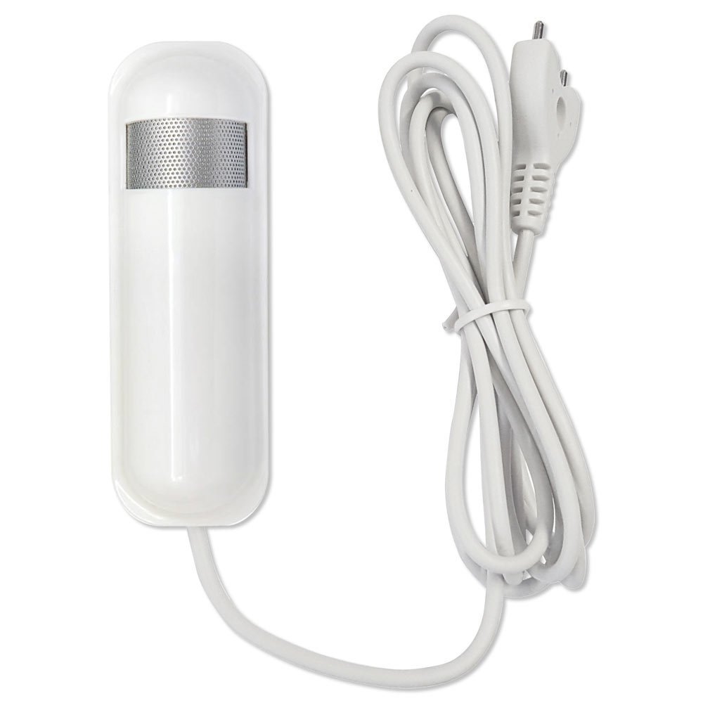

Zipato Z-Wave Flood Multi-Sensor (PH-PAT02.US)¶

Brief information¶
- Detects water to alert you to flooding, leaks
- Measures room temperature and humidity
- Works with any Z-Wave controller
- Built-in tamper protection
- Automatic low battery alerts
How to add to VENUS app¶
- 1. Activation
- Press “Add button” (button ‘+’) in app
- Press the tamper key three times within 1.5 seconds
- Wait for VENUS scan & detect this device and inform in app
- 2. Reset before adding
- Press “Add button” (button ‘+’) in app
- Press the tamper key three times within 1.5 seconds to reset
- Press the tamper key three times within 1.5 seconds once again to add
- Wait for VENUS scan & detect this device and inform in app
How to add/remove associated device(s) to¶
This device supports 2 association group with max supported 8 nodes.
To add associated device(s) to this device, below action is required:
- Add z-wave notified-devices (which will be associated to this sensor) to VENUS
- Select Associate button and then select notified-device(s) to add
- Wake-up this sensor: Press the tamper key three times within 1.5 seconds
- If successful, pop-up notification displays in VENUS app
To remove associated device(s) from this sensor, below action is required:
- Select Associate button and then select notified-device(s) to remove
- Wake-up this sensor: Press the tamper key three times within 1.5 seconds
- If successful, pop-up notification displays in VENUS app
Configuration description¶
Operation mode
Bit setting.
Available setting Apply all bits: 1 - disable, 0 - enable
Bit 0: Flood function
Bit 3: Temperature type (0: Fahrenheit, 1: Celcius)
Bit 5: Temperature function
Default setting 0 Multi-sensor function switch
Bit control setting. Setting bit #6
Available setting 0 - Enable huminity report
1 - Disable huminity report
Default setting 0 Customer function
Available setting Apply all bits, 1: disable, 0: enable
Bit 3: Disable function to send BASIC OFF (trigger to associated device off) after flood event cleared
Bit 4: Notification type - 0: Notification report, 1: Sensor binary report
Bit 5: Multi CC in auto report selection
Bit 6: Battery report selection
Default setting 0 Auto report battery interval
Interval time to device send battery information
Available setting 0 - Turn off auto report function
1 ~ 127: Interval time (in ticks - tick is defined as below)
Default setting 12 Auto report temperature interval
Interval time to device send battery information
Available setting 0 - Turn off auto report function
1 ~ 127: Interval time (in ticks - tick is defined as below)
Default setting 12 Auto report huminity interval
Interval time to device send battery information
Available setting 0 - Turn off auto report function
1 ~ 127: Interval time (in ticks - tick is defined as below)
Default setting 12 Auto report flood interval
Interval time to device send battery information
Available setting 0 - Turn off auto report function
1 ~ 127: Interval time (in ticks - tick is defined as below)
Default setting 12 Tick interval used in auto report
Tick interval can be set by user to configure time for auto report function.
Available setting 0 - Turn off all auto report functions
1 ~ 255: Interval time (in minutes)
Default setting 30
Factory reset¶
- Press the tamper key four times within 1.5 seconds and hold it until LED lights up.
- After 3 seconds the LED will turn OFF, and after that you should release the tamper key within 2 seconds.